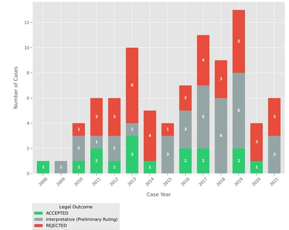
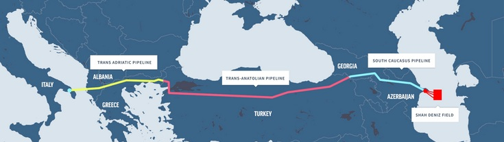

About Me
Hi! My name is Amon, and I am an Associate Researcher in European Law at the Jean Monnet Centre of Excellence at the Federal University of Minas Gerais (starting in March 2024), working with Prof. Jamile Bergamaschine Mata Diz. I earned my LL.M. in European and International Law from Universität des Saarlandes, where I worked with Prof. Andreas R. Ziegler. I received my B.A. (Hons.) in Public Policy and Management (Magna Cum Laude) from the Federal University of Ceará, working with Prof. Gil Cardoso and Prof. Tarin Mont'Alverne.
My research interest is in understanding the intersection between public policies and international law. Specifically, I am currently working on the energy transition and the change of the energy matrix within the Brazilian and European contexts. In order to develop these studies, I employ a variety of methods. On one hand, I work with the Observatory of Sustainable Municipal Public Policies to produce annual reports on the situation of municipalities in the State of Minas Gerais regarding these specific themes.
I grew up in Fortaleza, Brazil, which is where I managed to enter higher education at a federal public university.
Research
I am interested in the intersection of international public law, public policies, and international trade, with the goal of understanding climate change governance and the legal frameworks surrounding the energy transition[cite: 4, 5]. I use empirical-analytical methodologies, including jurimetrics and data analysis, to understand how environmental standards are negotiated and enforced globally[cite: 5]. Here, I wrote a small summary of what are my interests and what I am currently working on for research. You can find my co-authored publications below.
EU-MERCOSUR AGREEMENT & THE PRECAUTIONARY PRINCIPLE
EMPIRICAL LEGAL STUDIES ON NON-TARIFF BARRIERS
The European Union increasingly incorporates the Precautionary Principle into the Trade and Sustainable Development chapters of Free Trade Agreements[cite: 5]. My research investigates whether these measures promote inclusive economic cooperation or act as disguised non-tariff barriers that disadvantage emerging economies, particularly in the context of the EU-Mercosur Association Agreement[cite: 5]. Using a Python-based jurimetrics approach, I evaluate Court of Justice of the European Union (CJEU) judgments between 2000 and 2023 to quantify the internal judicial rigor applied to this principle and contrast it with external trade enforcement[cite: 5]. This work has been published in the Latin American Journal of European Studies.

ENERGY SECURITY AND THE EUROPEAN GREEN DEAL
GEOPOLITICAL TENSIONS AND JUST TRANSITION
The transition to a carbon-neutral economy by 2050 under the European Green Deal faces complex challenges[cite: 4]. I analyze the paradox of the European Union's energy agreements, specifically focusing on the dynamics of natural gas trade relations with Azerbaijan following the Russia-Ukraine conflict[cite: 4]. Despite efforts to promote renewable energy, the strategic dependence on fossil fuels creates a conflict between energy security, ethical principles, and human rights[cite: 4]. My work highlights the need to integrate strict human rights policies into international agreements to ensure a truly sustainable and just transition[cite: 4]. This work has been published in Monções: Revista de Relações Internacionais da UFGD.

CV & Education
- Ph.D. Candidate in Law - Federal University of Minas Gerais (2024-2028).
- LL.M. in European and International Law - Universität des Saarlandes, Germany (2022).
- B.A. (Hons) in Public Policy and Management - Federal University of Ceará (2019) — Magna Cum Laude.
Outreach
Text for the Outreach section will be customized here.
Resources
Text for the Resources section will be customized here.
Contact
Connect with me or access my institutional records:
- Email: amonelpidio@ufmg.br[cite: 3]
- Academic Links: Lattes CV | ORCID[cite: 3]